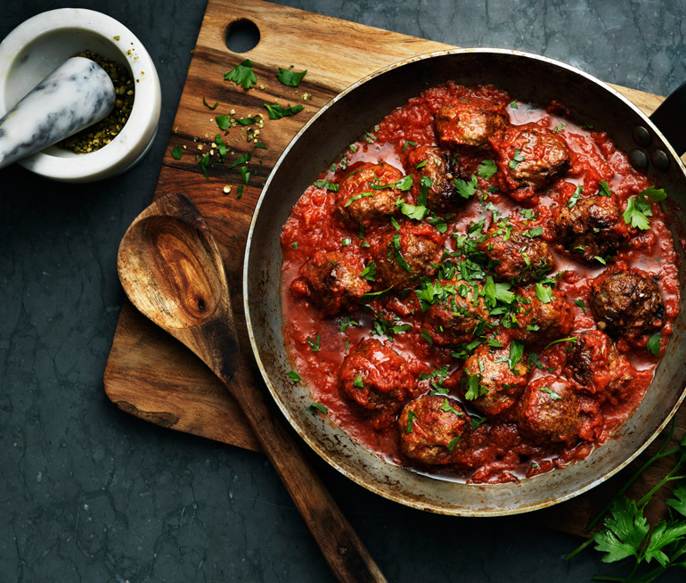

Meatballs!

Ingredients
- 1dl milk
- 2tbsp breadcrumbs
- 500g ground meat
- 1 chopped onion
- 1 egg
- 1/2tspn ground black pepper
- 1 1/2tspn salt
- Oil for frying
Instructions
- Mix milk and bread crumbs and let cool for 3 minutes.
- Mix meat, onions, egg, blackpepper and salt with the milk and bread crumbs mixture.
- Form large meatballs from the mixture, about 12 of them.
- Fry the meatballs in a frying pan in the oil until they are golden brown.
Comments